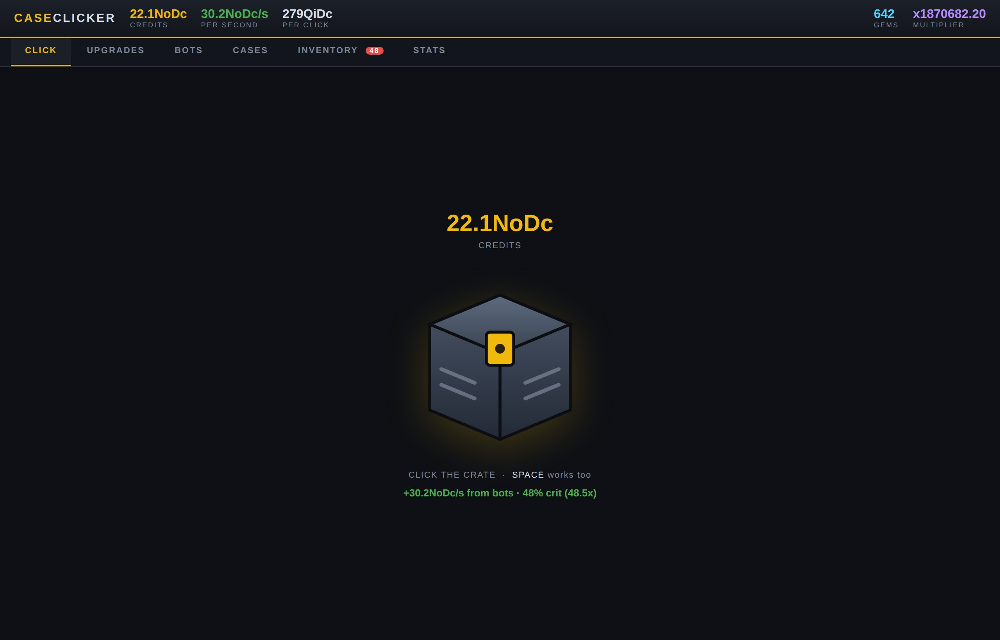

A free idle clicker for Windows. Click for credits, buy bots that click for you, unbox skins on a real roulette spin, then trade the whole account in for permanent bonuses. No ads, no accounts, no internet required.
Download for Windows
The main screen — click the crate, or let the bots handle it
What's in it
100 click upgrades, 100 autoclicker bots, 100 crates and a compounding prestige layer, spread across ten eras.
Mouse Grease, Hall Effect Sensors, a Cortex Implant, Bullet Time, The Final Click. Plus crit chance and crit payout tracks stacked on top.
From a Macro Script and a Mouse Jiggler all the way to a Dyson Swarm, a Black Hole Tap and The Architect. Three global multipliers stack on every one.
Chroma through to Black Market, with a real five-second roulette spin. Rare-special odds climb from 0.12% in the first crate to 7.5% in the last.
Every skin you keep is a permanent passive boost to both clicking and idle income — so hoarding is a real strategy against selling.
Cash the account in for Gems. They compound, so every run reaches deeper than the last — all 100 tiers are reachable.
Each is a permanent income bonus, not just a badge — including one for owning all 100 bots and one for opening all 100 crates.
Your bots keep working for up to 8 hours offline. Come back to a pile of credits and a welcome-back summary.
Progress is written to your own PC every 15 seconds and on close. Export it to a file any time, import it on another machine.
Tested at a sustained 500 clicks per second with a full inventory and it still holds a locked 60 FPS. Point your macro at it.
Getting started
No admin rights, no dependencies, no runtime to install first.
Windows may show a blue "Windows protected your PC" box — that appears for any app without a paid code-signing certificate. Click More info, then Run anyway.
Start Menu and Desktop shortcuts are both optional. It installs to your user folder, so Windows never asks for admin permission.
It opens in its own clean window. Your save lives at %APPDATA%\CaseClicker\save.json and survives reinstalls.
It's listed in Settings → Apps → Installed apps like any normal program. The uninstaller asks before it touches your save.
Questions
Because the app isn't signed with a code-signing certificate, which costs a few hundred euro a year from a certificate authority. SmartScreen shows that warning for every unsigned app, regardless of what's in it. Click More info → Run anyway.
Free, no catch. No ads, no in-app purchases, no analytics, no account, no telemetry. It never sends anything anywhere — the game runs entirely on your machine.
No. It runs a tiny server on 127.0.0.1 — your own machine, not the internet — purely so the game window can read and write your save file. Nothing leaves your PC. It works fully offline.
At %APPDATA%\CaseClicker\save.json. It's written every 15 seconds and again whenever you close or minimise the window. Uninstalling asks before deleting it, so reinstalling keeps your progress.
You can also back it up yourself: Stats → Export to file writes a .json you can import on any other PC.
Around 8 hours of engaged play to own all 100 bot tiers, if you use prestige well. There are ten eras of content, and each prestige run gets you meaningfully deeper than the last.
Go for it — that's what the bots are anyway. It's been stress-tested at a sustained 500 clicks per second with a 600-skin inventory and holds a steady 60 FPS.
The whole game is one compiled Go executable with the interface embedded inside it. No Electron, no bundled browser, no .NET runtime — it uses the browser engine already on your PC to draw its window.
Not right now — the build is Windows 64-bit only. The code is cross-platform, so a Mac or Linux build is possible if there's interest.
No. It's an independent fan-made idle game that borrows the crate-opening format. It has no affiliation with, or endorsement from, Valve, and no real items, trading or money are involved anywhere in it.
Ready
Free, 2.3 MB, no strings.
Download Case Clicker